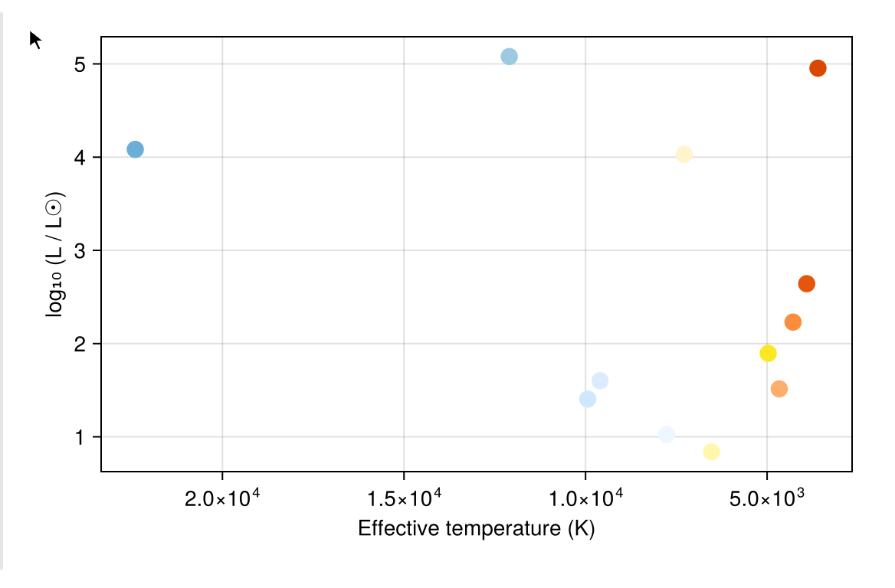
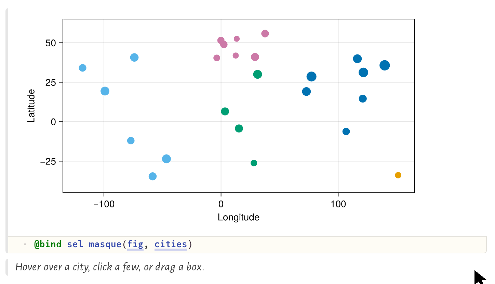
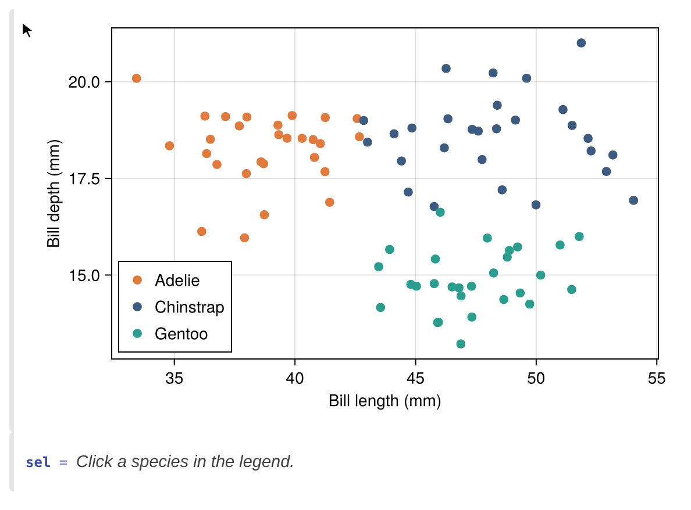

Masque.jl
Masque adds tooltips and click selection to Makie figures in a Pluto notebook. Clicking a mark updates a @bind variable, so the rest of your notebook can respond. Ready to get started?
Tooltips

Hover over a point, bar, heatmap cell, or polygon to see its data in a tooltip. You choose what the tooltip says. See Tooltips.
Select marks

Click a mark to send it to your notebook. With select = :many, each click adds a mark, and dragging a box picks every mark inside it. Ctrl-Z (Cmd-Z on a Mac) takes back the last change. See What each mark returns and Selection.
Build a widget
Lay out a Makie slider, toggle, or menu in the figure, and it works in the notebook next to the marks you can pick, all in one @bind value. With onchange, the figure redraws as the reader moves a control, without running the cell again. Build a widget walks through one that labels points into classes.
Pan, zoom and orbit
Drag a 2D axis to pan, or an Axis3 to orbit, and scroll to zoom either. See Pan, zoom and orbit.
Highlight from the legend

Click a legend entry to highlight the traces it labels, and a cell that uses the selection can fade the others, as in this example. See Legend.
Publish outside Pluto
Tooltips and highlights keep working in a static HTML export of your notebook, like the figure below: hover over a borough to try it. See Publish outside Pluto.
Backends
Masque works with CairoMakie and WGLMakie. See Backends to choose between them.
Next: Getting started installs Masque and makes a first figure interactive.